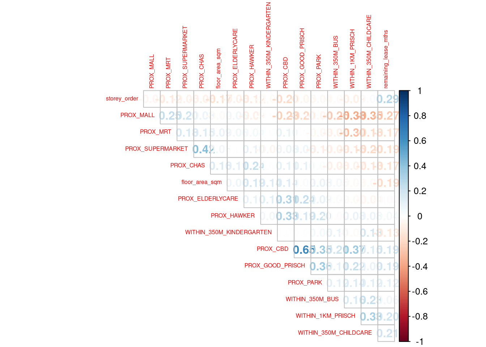
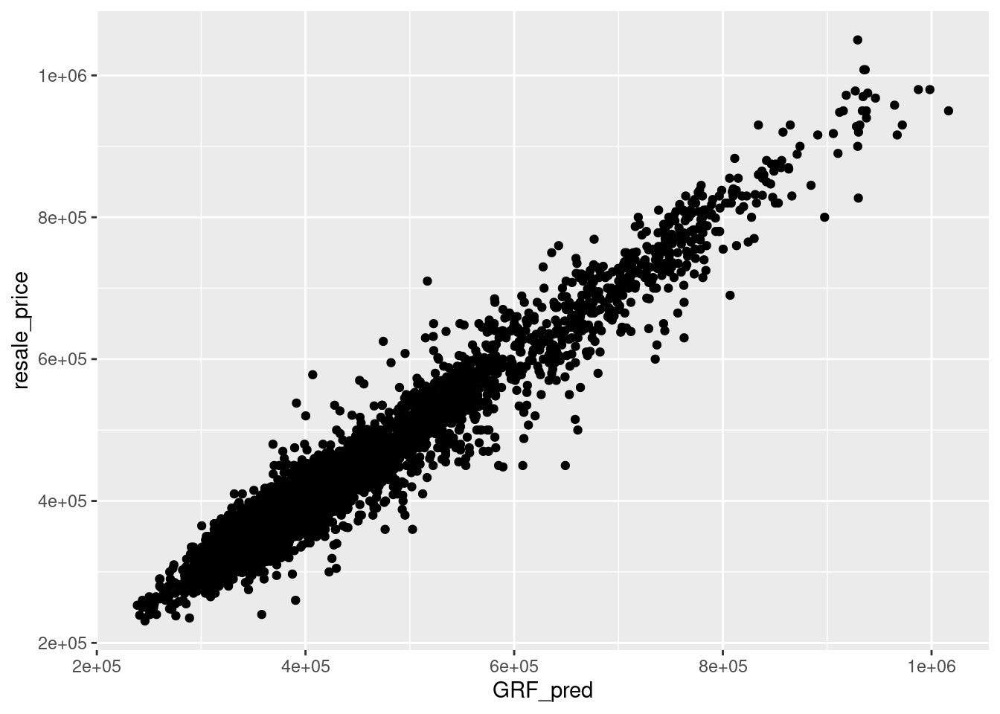

pacman::p_load(sf, spdep, GWmodel, SpatialML, tmap, rsample, Metrics, tidyverse)Hands-on Exercise 12
Predictive modeling helps us forecast future outcomes using statistical and machine learning methods. While we’re trying to predict what will happen in the future, we train these models using historical data where we already know both the outcomes and the factors that influenced them.
When we add geography to predictive modeling (geospatial predictive modeling), we’re working with a key insight: events don’t happen randomly across a map. Think of it like this - businesses don’t open in random locations, crimes don’t occur uniformly across a city, and wildlife isn’t evenly distributed through a forest. Instead, these events are influenced by various geographical factors such as:
Physical features (like terrain and climate)
Human infrastructure (like roads and buildings)
Social and cultural patterns (like population density and neighborhood characteristics)
By analyzing where events happened in the past and mapping these locations against relevant geographical features, we can identify patterns and relationships that help predict where similar events are likely to occur in the future.
Installing packages
Preparing data
mdata <- read_rds("data/model/mdata.rds")The data is divided into two parts using the initial_split() function from the rsample package (which is part of tidymodels):
Training data: 65% of the original dataset, used to build and train the model
Test data: The remaining 35%, used to evaluate how well the model performs
set.seed(1234)
resale_split <- initial_split(mdata,
prop = 6.5/10,)
train_data <- training(resale_split)
test_data <- testing(resale_split)write_rds(train_data, "data/model/train_data.rds")
write_rds(test_data, "data/model/test_data.rds")Computing correlation matrix
Before loading the predictors into a predictive model, it is always a good practice to use correlation matrix to examine if there is sign of multicolinearity.
mdata_nogeo <- mdata %>%
st_drop_geometry()
corrplot::corrplot(cor(mdata_nogeo[, 2:17]),
diag = FALSE,
order = "AOE",
tl.pos = "td",
tl.cex = 0.5,
method = "number",
type = "upper")
If all correlation values are below 0.8, there is no sign of multicolinearity.
Multicollinearity occurs when predictors are highly correlated (≥0.8), which makes the model unstable and unreliable since it can’t determine which variable is truly influencing the outcome.
Retrieving the stored data
train_data <- read_rds("data/model/train_data.rds")
test_data <- read_rds("data/model/test_data.rds")Building a non-spatial multiple linear regression
This code below creates a linear regression model that predicts resale_price based on 14 different features: the apartment’s physical characteristics (floor area, story height, remaining lease) and various proximity measures to amenities (like MRT stations, parks, malls, schools, etc.) using the training dataset. It is essentially trying to understand how these 14 different factors influence HDB resale prices in Singapore.
price_mlr <- lm(resale_price ~ floor_area_sqm +
storey_order + remaining_lease_mths +
PROX_CBD + PROX_ELDERLYCARE + PROX_HAWKER +
PROX_MRT + PROX_PARK + PROX_MALL +
PROX_SUPERMARKET + WITHIN_350M_KINDERGARTEN +
WITHIN_350M_CHILDCARE + WITHIN_350M_BUS +
WITHIN_1KM_PRISCH,
data=train_data)
summary(price_mlr)write_rds(price_mlr, "data/model/price_mlr.rds" ) Preparing coordinates data
Extracting coordinates data
Here’s how we extract the location coordinates from all our datasets.
coords <- st_coordinates(mdata)
coords_train <- st_coordinates(train_data)
coords_test <- st_coordinates(test_data)Let’s save our results as an RDS file for future use.
coords_train <- write_rds(coords_train, "data/model/coords_train.rds")
coords_test <- write_rds(coords_test, "data/model/coords_test.rds")coords_train <- read_rds("data/model/coords_train.rds")
coords_test <- read_rds("data/model/coords_test.rds")Dropping geometry field
Let’s convert our spatial data frame to a regular data frame by removing the geometry column.
train_data <- train_data %>% st_drop_geometry()Calibrating random forest model
In this section, you will learn how to calibrate a model to predict HDB resale price by using random forest function of ranger package.
set.seed(1234)
rf <- ranger(resale_price ~ floor_area_sqm + storey_order +
remaining_lease_mths + PROX_CBD + PROX_ELDERLYCARE +
PROX_HAWKER + PROX_MRT + PROX_PARK + PROX_MALL +
PROX_SUPERMARKET + WITHIN_350M_KINDERGARTEN +
WITHIN_350M_CHILDCARE + WITHIN_350M_BUS +
WITHIN_1KM_PRISCH,
data=train_data)
rfwrite_rds(rf, "data/model/rf.rds")rf <- read_rds("data/model/rf.rds")
rfRanger result
Call:
ranger(resale_price ~ floor_area_sqm + storey_order + remaining_lease_mths + PROX_CBD + PROX_ELDERLYCARE + PROX_HAWKER + PROX_MRT + PROX_PARK + PROX_MALL + PROX_SUPERMARKET + WITHIN_350M_KINDERGARTEN + WITHIN_350M_CHILDCARE + WITHIN_350M_BUS + WITHIN_1KM_PRISCH, data = train_data)
Type: Regression
Number of trees: 500
Sample size: 10335
Number of independent variables: 14
Mtry: 3
Target node size: 5
Variable importance mode: none
Splitrule: variance
OOB prediction error (MSE): 728602496
R squared (OOB): 0.9495728 Calibrating geographical random forest model
In this section, you will learn how to calibrate a model to predict HDB resale price by using grf() of SpatialML package.
Calibrating using training data
This code creates a Geographically Weighted Random Forest (GW-RF) model to predict HDB resale_price using the same 14 features we saw earlier. bw=55 sets the bandwidth to include the 55 nearest neighbors. kernel="adaptive" means the model adapts its influence based on the density of data points in different locations. coords=coords_train specifies the geographical coordinates to account for spatial relationships
set.seed(1234)
gwRF_adaptive <- grf(formula = resale_price ~ floor_area_sqm + storey_order +
remaining_lease_mths + PROX_CBD + PROX_ELDERLYCARE +
PROX_HAWKER + PROX_MRT + PROX_PARK + PROX_MALL +
PROX_SUPERMARKET + WITHIN_350M_KINDERGARTEN +
WITHIN_350M_CHILDCARE + WITHIN_350M_BUS +
WITHIN_1KM_PRISCH,
dframe=train_data,
bw=55,
kernel="adaptive",
coords=coords_train)Let’s save the model output by using the code chunk below.
write_rds(gwRF_adaptive, "data/model/gwRF_adaptive.rds")The code chunk below can be used to retrieve the save model in future.
gwRF_adaptive <- read_rds("data/model/gwRF_adaptive.rds")Predicting by using test data
Preparing the test data
The code chunk below will be used to combine the test data with its corresponding coordinates data.
test_data <- cbind(test_data, coords_test) %>% st_drop_geometry()Predicting with test data
Next, predict.grf() of SpatialML package will be used to predict the resale value by using the test data and gwRF_adaptive model calibrated earlier.
gwRF_pred <- predict.grf(gwRF_adaptive,
test_data,
x.var.name="X",
y.var.name="Y",
local.w=1,
global.w=0)GRF_pred <- write_rds(gwRF_pred, "data/model/GRF_pred.rds")Converting the predicting output into a data frame
GRF_pred <- read_rds("data/model/GRF_pred.rds")
GRF_pred_df <- as.data.frame(GRF_pred)test_data_p <- cbind(test_data, GRF_pred_df)write_rds(test_data_p, "data/model/test_data_p.rds")test_data_p <- read_rds("data/model/test_data_p.rds")Calculating root mean square error
The root mean square error (RMSE) allows us to measure how far predicted values are from observed values in a regression analysis. In the code chunk below, rmse of Metrics package is used to compute the RMSE.
The RMSE tells us on average how far off our predictions are from the actual prices in the same units (Singapore dollars in this case). For example, if the RMSE is 50,000, it means our model’s predictions are typically off by about $50,000 - the lower this number, the better our model is performing at predicting HDB resale prices.
rmse(test_data_p$resale_price, test_data_p$GRF_pred)[1] 27302.9Visualising the predicted values
Alternatively, scatterplot can be used to visualise the actual resale price and the predicted resale price by using the code chunk below.
ggplot(data = test_data_p,
aes(x = GRF_pred,
y = resale_price)) +
geom_point()
If they are highly correlated, it means that the model fits the actual data extremely well.